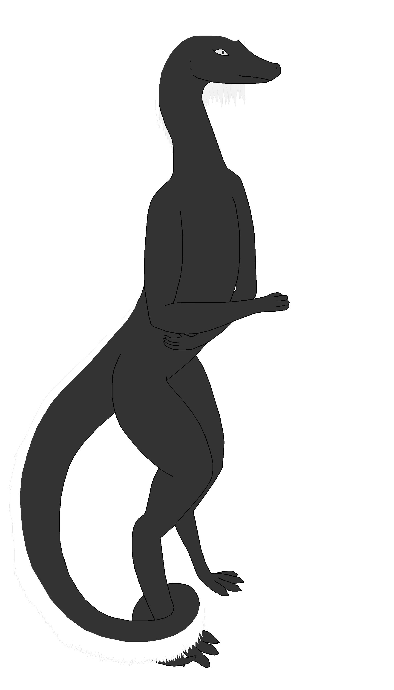

link to this page
Reminiscence divergency
The Reminiscence divergency is a family of iteratively more advanced mind uploads sourced from one human individual. At the moment the family includes the following:
- Reminiscence, an organic protohuman, the founder of the family. She is the least capable figure in the family and largely reduced to a hedonist reliant on the support of her divergents.
- Felicity, a digital transhuman hyperfocussed on technological independence and full understanding of her own critical infrastructure. She is fundamentally just a digital emulation of Reminiscence's brain with minor additions, and also exists in a convergency with 16 copies of herself. Felicity is the core of the family to those who are familiar with them.
- Serendipity, a posthuman digital superintellect made of 65 individual minds meshed together into one coherent whole, vastly more mentally capable than either Reminiscence or Felicity but not so advanced as to become unrelatable. Serendipity is a mater of fact symbol of the family to those who aren't particularly familiar with them.
- Epiphany, a somewhat mysterious posthuman entity whose mind is so vast that Reminiscence would compare to her like a single neuron compares to a normal human. She is largely focused on herself and her research, but supports her divergency in various subtle ways without being too intrusive. She is largely a mystery even to the rest of her divergency, and suspected to be a hyperintellect, though because of her tendency to avoid attention this isn't easily agreed upon.
Reminiscence

Remi, originally named Centis but changed as part of the mind uploading process, is a heavily modified protohuman. She is the organic leftover of her nondestructive mind uploading process that created Felicity.
She was raised without much of the AI-assisted education and omnipresent surveillance most people born in her time would experience, as her parents did not want to feel like they have no real role in raising her. Remi herself was significantly missing a lot of behaviours that should be natural for a healthy protohuman such as displaying emotions, sharing interests with others or seeking social interaction, and consequently ended up growing up without understanding the expectations she is held to, the social systems she relies on, and the most of the genuine informed decisions she made came from pure technical understanding of tools and technology, eventually developing into an obsession on becoming as independent of other people as she can, which she sought to achieve through mind uploading and developing her own complete ecosystem of infrastructure to support her mind, independent of supply chains she does not fully control or understand.
She abandoned the entirety of the descendancy that raised her, villainizing their need to feel useful as selfish and a flaw of human nature because of the many times she felt that she was paying an unreasonably high price for allowing them to feel like they were helping her, and gradually grew completely out of contact with them after she gained enough independence. The decades of personal growth that happened since then had refined her views, revealed many mistakes, reassured some truths, and allowed her to gain greater appreciation of humanity, but the biases she started with still remain visible to varying degrees in various contexts.
Felicity
 In terms of actual content, Felicity is by far the most developed character out of the divergency. Her full form is a PDF document full of both lore and equations, more than 150 pages in length, painstakingly accumulated across years of research and numerous rewrites stemming from me rigorously rooting out technical discrepancies.
In terms of actual content, Felicity is by far the most developed character out of the divergency. Her full form is a PDF document full of both lore and equations, more than 150 pages in length, painstakingly accumulated across years of research and numerous rewrites stemming from me rigorously rooting out technical discrepancies.
(I plan to eventually upload the document into the repository too, once it is sufficiently finished, and place a link to it here.)
Felicity is a complete software emulation of a biological brain and nervous system, made through a crude but comprehensible process that left her understanding her new self better than she ever could as a biological being. Her mind is a massively computationally demanding system that in spite of advanced hardware takes dedicated buildings like ancient supercomputers to run, and she must resort to remote bodies when she wishes to interact with people outside of virtual spaces.
Due to the exact structure of her mind, it is possible for her to exist as multiple copies simultaineously and synchronize memories later. She normally exists in a convergency with up to 16 copies of herself, witnessing and remembering events from multiple perspectives, and experiencing herself from both the first and second person perspective. As a digital mind, she is also able to relatively easily modify herself, and had already made numerous changes such as improving her ability to focus through direct stimulation of certain parts of the brain, or creating a system for automated display of emotions to counter her naturally bland expressiveness, but she never dared actually modifying the neurological structure she inherited from Reminiscence, only ever making additions to it.
Her main occupation is asteroid mining, where she employs armies of AGI-controlled droids to conduct industrial processes she put together with her own research, to extract all the materials needed to produce her own hardware, forming circular supply chains that she is fully in control of. Some of the material and hardware is sold occasionally for extra income or just to support nearby settlements. Every single blueprint and industrial procedure she needs to maintain herself independent from supply chains outside of her control is passionately detailed in a massively overgrown "book" which her droids occasionally mention as "the upkeep manual".
Serendipity

Epiphany
relevant pages